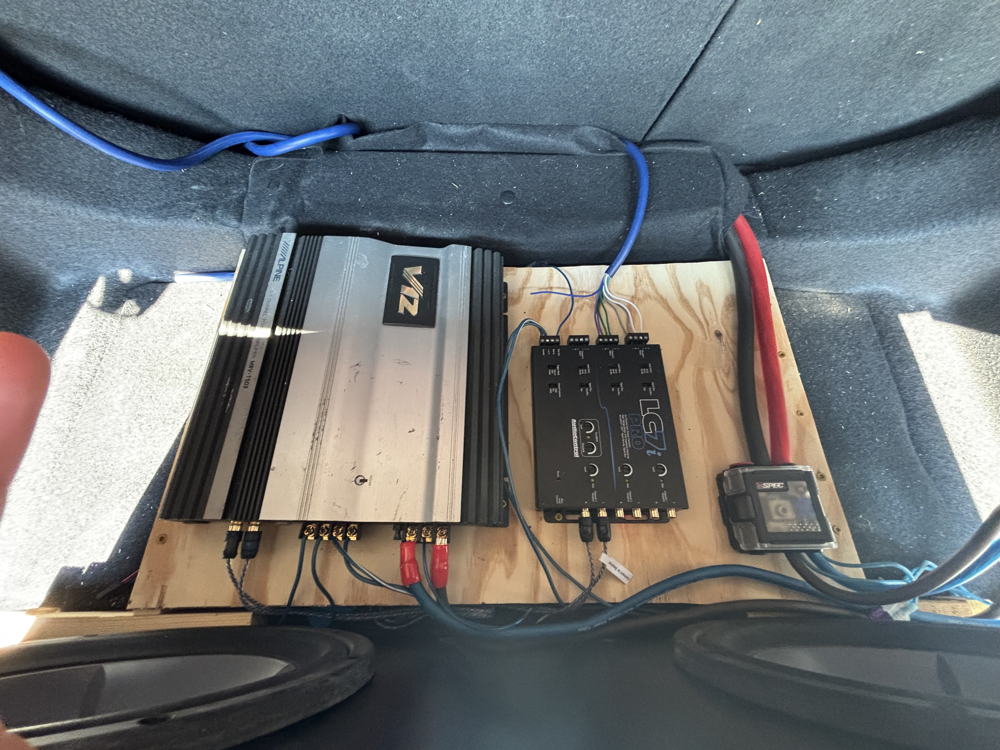

Featured Projects
CAMP 2.0 Photonics Database
When my school began building a new photonics lab, I was recruited alongside a group of peers to provide the student perspective. Swipe through the presentation below to explore the education pipeline and reservation system I developed to give teachers easy, streamlined access to the new facility.
Solvita Blood and Tissue Bank: Job Shadow
Collaborated with process and biomedical engineers to analyze the technical workflows behind skin grafting. Gained direct, hands-on exposure to research, development, and continuous improvement within a professional biomedical environment.
Custom Car Audio Fabrication
Hands-on mechanical and electrical fabrication project featuring custom trunk amp racks. Designed a clean, non-destructive zero-gauge wiring layout to integrate subwoofers.
